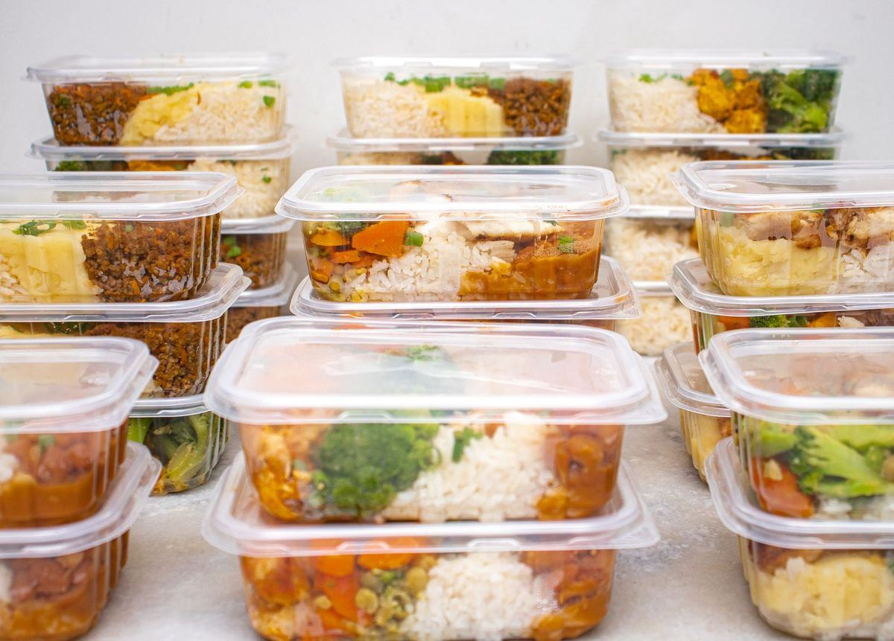

Meal ideas
High Protein Meal Prep for Beginners: A Simple Sunday Plan

This guide contains affiliate links. If you buy through them, Holistic Life may earn a small commission at no extra cost to you. How we use affiliate links.
Quick answer
- The 2-2-2 idea: cook two proteins, two grains or starches and two vegetables, once.
- Mix them into eight different lunches and dinners, enough for Monday to Thursday.
- Plan on about 90 minutes of cooking, from the first pan to packed containers.
- Keep meals in the fridge for 3 to 4 days, and freeze what you will not eat in time.
If you have tried to start high protein meal prep and quit by Wednesday, the plan was probably too big. Seven recipes, seven sauces and a sink full of pans is a lot for one day off. This guide is smaller on purpose.
You will cook six plain foods once, in about 90 minutes, and mix them into eight different lunches and dinners for Monday to Thursday. Sunday is the example day, but any day off works, which helps if you work shifts. This is a nurse-run site, and the goal is a plan you can repeat.
The 2-2-2 plan
Cook two proteins, two grains or starches and two vegetables. Here is the list, sized for one person (double it for two):
- Protein 1: about 2 pounds of boneless, skinless chicken thighs.
- Protein 2: 1 pound of ground turkey and one 15-ounce can of black beans.
- Grain: 1 and a half cups of dry rice, white or brown.
- Starch: about 2 pounds of sweet potatoes (about 3 medium).
- Vegetable 1: 2 large crowns of broccoli.
- Vegetable 2: 3 bell peppers and 1 onion.
- Pantry: olive oil, salt, pepper, garlic powder, paprika and taco seasoning. For changing the flavor later, add salsa, soy sauce and a lemon or lime.
Why is this high protein? A protein food sits at the center of every meal. MedlinePlus, from the National Library of Medicine, lists meat, fish, poultry, eggs and milk as sources of protein, along with beans, lentils, tofu, nuts and seeds. You do not need to count anything. Chicken, turkey and beans do the work, and the rice, potatoes and vegetables fill out the plate.
The prep day, step by step
Allow about 90 minutes from start to packed containers. Before you begin, set out one cutting board for the raw chicken and another for the vegetables. FoodSafety.gov also says to wash your hands with soap and water after handling raw meat or poultry.
- Heat the oven to 425°F. Start the rice in a rice cooker or a pot, and keep it covered until you pack.
- Cube the sweet potatoes, toss them with oil and salt, and spread them on the first sheet pan. Put it in the oven. They need about 30 minutes in total.
- Rub the chicken with oil, garlic powder, paprika, salt and pepper. Put it on the second sheet pan and roast 20 to 25 minutes, until the thickest part reaches 165°F.
- When the sweet potatoes have had about 15 minutes, push them to one side and add the broccoli florets to their pan for the last 15 minutes.
- On the stove, cook the sliced peppers and onion in a little oil until soft, then set them aside. In the same skillet, brown the ground turkey, breaking it up, until it reaches 165°F. Stir in the taco seasoning and the drained, rinsed black beans.
- Pack eight shallow containers with one protein, one grain or starch and one vegetable each, following the table below. Refrigerate within 2 hours of cooking.
- Once they stop steaming, freeze the two Thursday containers, then move them to the refrigerator on Wednesday night. Thursday is day four, the end of the USDA's fridge window, so this gives you a margin.
Eight meals from six foods
No two meals are the same combination, so the week does not feel repetitive.
| Day | Lunch | Dinner |
|---|---|---|
| Monday | Chicken, rice, broccoli | Turkey and beans, sweet potato, peppers |
| Tuesday | Turkey and beans, rice, peppers | Chicken, sweet potato, broccoli |
| Wednesday | Chicken, rice, peppers | Turkey and beans, sweet potato, broccoli |
| Thursday | Turkey and beans, rice, broccoli | Chicken, sweet potato, peppers |
Change the flavor at the table instead of in the pan. Try salsa and lime on the turkey bowls, soy sauce on the chicken and rice, a squeeze of lemon over the vegetables, or a dash of hot sauce on anything.
Keeping it safe
According to the USDA, refrigerate leftovers within 2 hours of cooking. To cool food fast, divide large amounts into shallow containers. Hot food can go straight into the refrigerator. Keep the refrigerator at 40°F or below.
Leftovers can be kept in the refrigerator for 3 to 4 days, or frozen for 3 to 4 months. That is why the plan stops at Thursday. Thaw frozen meals in the refrigerator, where the USDA says they stay safe the whole time, and use them within 3 to 4 days.
Reheat leftovers until they reach 165°F. In a microwave, cover the food, rotate or stir it, and check the temperature in more than one place, because microwaves leave cold spots.
Easy swaps
- Tofu, lentils or eggs can replace the meat. MedlinePlus says you do not need to eat animal products to get all the protein you need.
- Quinoa or regular potatoes can replace the rice or sweet potatoes.
- Frozen vegetables save the chopping. Roast them straight from the freezer.
- Green beans or carrots can replace the broccoli or peppers.
Gear that helps
You can start with what you have. If you are missing something, these four items make prep day smoother.
Glass meal prep containers
You will pack eight meals in one go, so you need containers that stack and seal. Glass goes from the fridge to the microwave (check whether the lid can too), and into the freezer for the meals you save for later.
What to look for
- Locking lids with an airtight seal
- Glass that can go in the microwave and the freezer
- One-meal size, about 3 to 4 cups each
Options that fit
- M MCIRCO glass meal prep containers, 30 oz, 8-pack Eight containers with snap-lock lids, one for every meal in the plan (paid link)
- PrepNaturals glass meal prep containers, 30 oz, 5-pack A smaller set of five with snap-lock lids, about 3.75 cups each (paid link)
See more glass containers on Amazon (paid link)
Two rimmed sheet pans
Sweet potatoes, broccoli and chicken all roast at the same time on two pans. The raised rim keeps juices and oil from running into the oven.
What to look for
- Half-sheet size, about 18 by 13 inches
- Aluminum or steel made to resist warping
- A raised rim that keeps juices on the pan
Options that fit
- Nordic Ware Naturals aluminum half sheet, 2-pack About 18 by 13 inches, with steel-reinforced rims made to resist warping (paid link)
- Umite Chef aluminum half sheet pans, 18 x 13 inches, 2-pack 18-gauge aluminum with a reinforced rim and tall sides (paid link)
See more sheet pans on Amazon (paid link)
Rice cooker
It cooks the rice without a pot to watch, which frees a burner for the skillet. The keep-warm setting holds the rice while you finish everything else.
What to look for
- A keep-warm setting that switches on by itself
- A nonstick inner pot that lifts out for washing
- Room for at least 6 cups of cooked rice
Options that fit
- BLACK+DECKER rice cooker, 6 cups cooked Nonstick pot lifts out, and keep-warm starts when the rice is done (paid link)
- Zojirushi 6-cup rice cooker and steamer Cooks up to 6 measures of dry rice, in a removable nonstick pan (paid link)
See more rice cookers on Amazon (paid link)
Instant-read thermometer
Chicken and turkey need to reach 165°F, and a food thermometer is how you check. A quick reading tells you when each one is done.
What to look for
- A reading in a few seconds
- A backlit display that is easy to read
- A probe that folds away for storage
Options that fit
- Alpha Grillers instant-read meat thermometer Backlit display, and it folds shut to switch off (paid link)
- TempPro TempSwift TP19 instant-read thermometer Backlit display that flips to stay upright, and a probe that folds shut (paid link)
See more food thermometers on Amazon (paid link)
When prep day does not happen
Some weeks it will not happen, and that is fine. Our high protein dinners cook fresh in about 30 minutes. If you pack meals for long shifts, see meal prep for 12-hour shifts for packing tips. A meal kit such as Home Chef can also cover a week when cooking is not happening.
Frequently asked questions
How long does meal prep last in the fridge?
The USDA says leftovers can be kept in the refrigerator for 3 to 4 days. That is why this plan covers four days. If you will not eat a meal in time, freeze it instead.
Can I freeze prepped meals?
Yes. The USDA says leftovers can be frozen for 3 to 4 months. They stay safe longer than that, but they can lose moisture and flavor. Thaw them in the refrigerator, and reheat until they reach 165°F.
How much protein do I need?
It depends on your overall calorie needs, according to MedlinePlus. A dietitian or your clinician can give you a figure that fits you. You do not need to count anything to follow this plan.
Sources
Save this guide for later
Tap a pin to save it to your Pinterest boards.